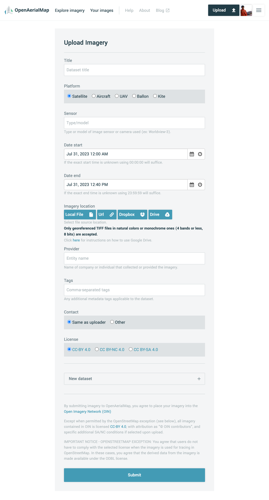
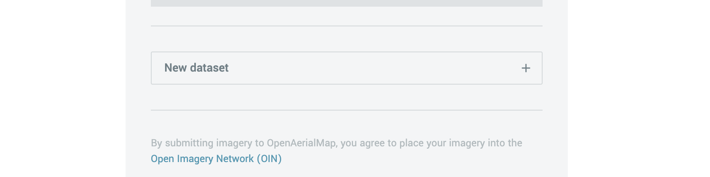

Uploader Form
The upload form is the way for users to contribute to the OAM imagery database. Besides uploading the imagery itself, contributors need to provide metadata for imagery datasets. There are two types of fields for filling in the metadata: fields for input values (Title, Sensor, Provider, Tags, Contact info) and fields with choices (Platform, Date start, Date end, Contact, License).

Also, there is an opportunity to upload several imagery datasets by clicking on the “New dataset” button.

Contributing
In order to upload imagery to OAM, you have two options for storing your files. One option is to have your files stored in a publicly accessible location, which means they cannot be stored only on your computer but need to be stored in a location that allows downloads. Services like Dropbox provide easy-to-use file storage with methods for public sharing. Alternatively, you can also upload files directly from your local device. This means you can select and upload files that are stored on your computer without the need for them to be in a publicly accessible location.
via Dropbox
If you have your imagery stored in Dropbox, you can directly select the files you would like to upload from the Dropbox file integration.
Select Dropbox as your Imagery Location, and Dropbox will open a dialog box to authorize and allow you to select individual files to share. Multiple files can be selected.
Please be aware that Dropbox automatically turns on file sharing for each file selected temporarily.
via public URL
If you have files stored in another location, copy and paste the full URL (including “http”) into the Upload form box. These file locations need to be publicly accessible, meaning that anyone with the link can download from that location.
via Local Device
Users can also upload imagery from their local devices. The system suggests files in TIFF and TIF formats by default. To initiate the upload, select the desired files from your device and then submit the form. Once submitted, the uploading process will begin.
Source code and development
The oam-uploader is completely open source and the code and instructions are available on github under the BSD 3-Clause license.